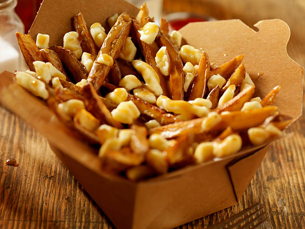

Poutine

Description:
Poutine is a famous Canadian dish that originates from the province of Quebec.
It was created during the 1950s and consists of french fries and cheese curds covered in gravy.
Ingredients:
- Straight cut french fries
- White cheese curds
- Beef gravy
Steps:
- Bake the french fries in an oven
- Place the cheese curds on top of the french fries
- Heat up the gravy and cover the french fries and cheese curds
- Wait until the cheese curds have melted